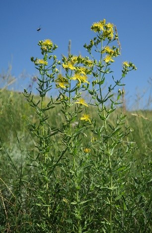

|

Многолетнее корневищное растение. Стебли 20 — 50 см высотой, цилиндрические, с 2 продольными ребрами, как и листья гладкие.
Листья 1.5 — 2 см длины, 3 — 10 мм ширины, ланцетные, коротко заостренные, при основании стеблеобъемлющие, нередко с завернутыми краями.
Соцветие — щитковидная или пирамидальная метелка из 5 — 12 цветков. Чашечка колокольчатая с черными железками на концах зубчиков.
Лепестки светло-желтые. Цветет в июне — июле. От других видов зверобоя отличается более ксероморфным обликом,
формой листьев и чашелистиками, несущими по краям черные железки.
Фотограф: Татьяна Сова |
Многолетнее травянистое растение с прямостоячими стеблями высотой 40-80 см. Листья супротивные,
продолговато-яйцевидные или линейно-продолговатые, длиной до 3 см и шириной до 1,5 см, цельнокрайние,
с многочисленными просвечивающимися точечными желёзками, отчего лист кажется как-бы продырявленным иголкой (откуда и видовое название).
Цветки крупные (около 3 см в диаметре), многочисленные, собраны в конечные широкометельчатые или почти щитковидные соцветия.
Околоцветник двойной, пятичленный; чашелистики зелёные, с чёрными желёзками; венчик золотисто-жёлтый; тычинок много,
они срастаются нитями в три пучка; пестик стремя столбиками. Плоды — коричневые кожистые коробочки с многочисленными мелкими
тёмно-коричневыми семенами. Цветёт в июне-августе, плоды созревают в июле-сентябре.
Фотограф: Наталья Бешко |